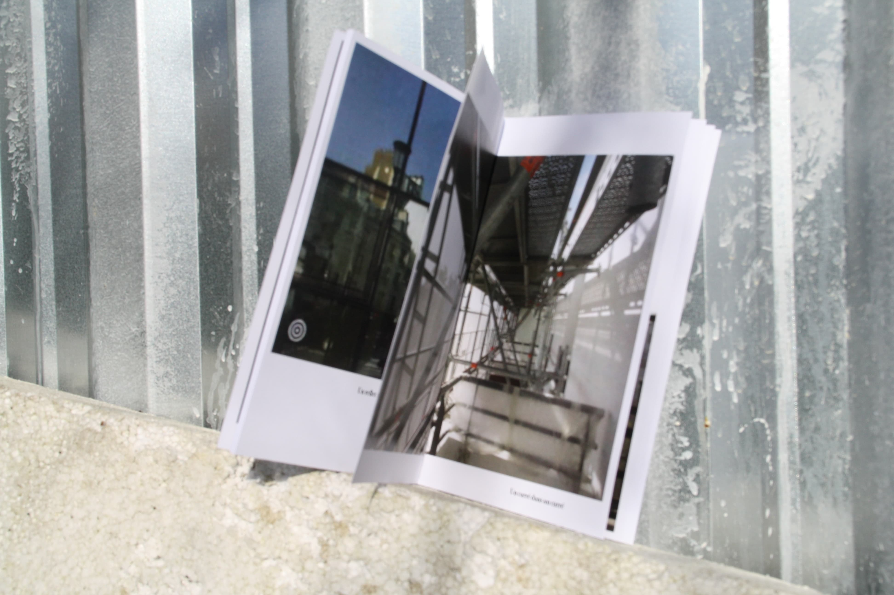
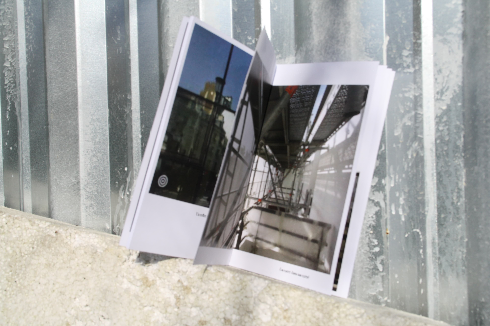
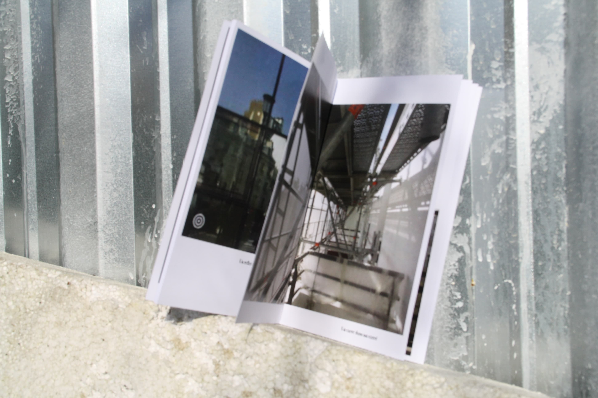

Windows
"Windows" is an photography edition around the window as an invisible wall of perspective. It explores all types of windows, from

"Windows" is an photography edition around the window as an invisible wall of perspective. It explores all types of windows, from